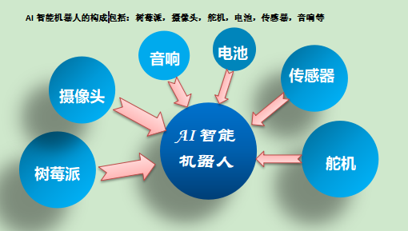

团队队长：蒋锦鹏
团队队员：陈新林、苏朝林、卢庆隆、黄炯洁、冼美玲、汪楚楚
现在市场上的普通监控，价格大概在一百到两百之间，可以完成监 控保障，但安全系数不高，死角多，链接不便捷，还有很多电源线路的 限制；而监控机器人，由于它的智能性，市场价格一千元起步，质量好， 功能多的价格也就更高，它比普通监控安全保障更高，可以防止产生监 控死角，但高昂的价格并不适合大众，绝大多数家庭接受不了，在结合 两种监控机器和优劣后，我们的产品互联网+AI智能机器人应运而生。
机器人的构成：树莓派、摄像头、舵机、电池、传感器、音响等

制作过程：AI视觉云台从零件的组装到树莓派系统的写入，再到各个不同板块和代码程序的输入
1.及时性：当有陌生人进入房子，系统自动邮件和短信告知用户，然后利用云平台，可以进行远程监控与操控，
进行语音警告，或者主动报警。
2.安全性：我们的产品具有颜色识别与追踪，人脸识别，云台记录保存的功能。
3.便捷性：AI智能机器人自带电源，不用担心断电导致监控的功能的丧失，云平台连接让你时时刻刻都可以知晓家里的情况。
4.可持续发展性：AI智能机器人以树莓派为核心给产品一个无限发展的可能，在后期的制作中可以加入更多的板块实现不同的功能。